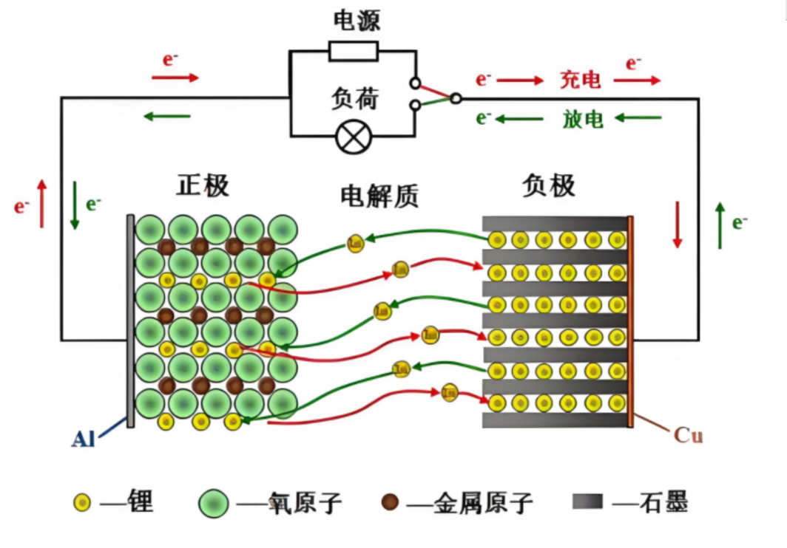
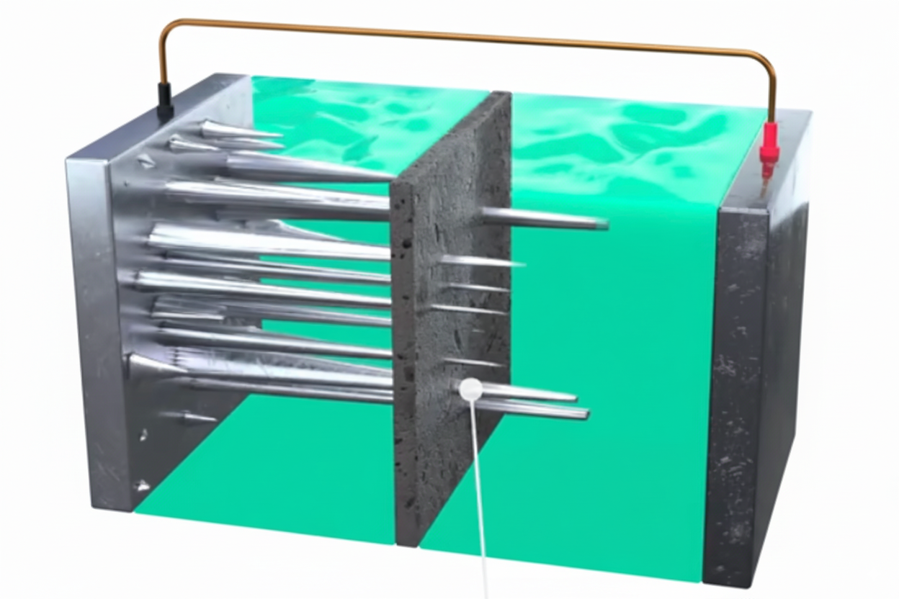
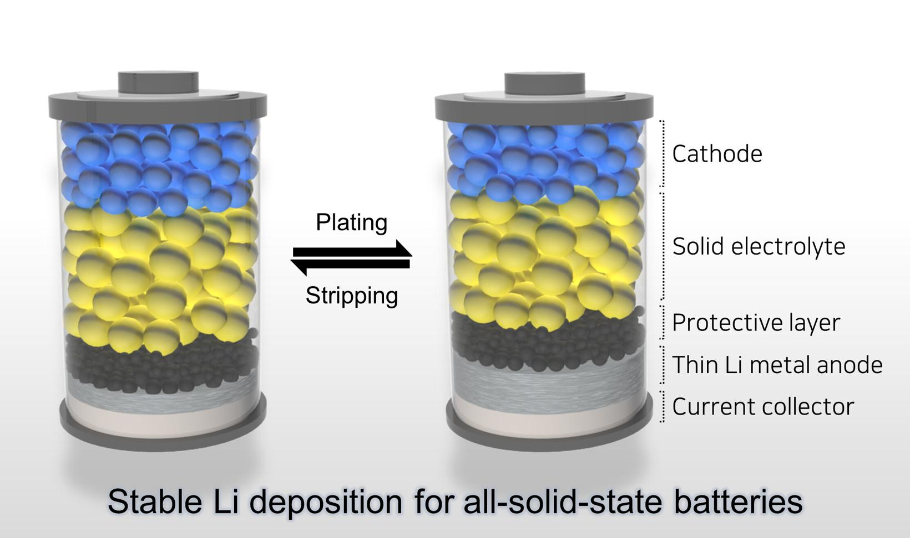
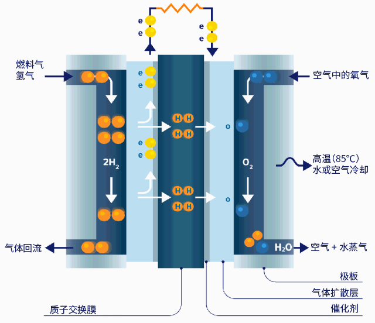

当下两种电池的比较——两种锂电池
| 三元锂电池 | 磷酸铁锂电池 |
|---|
| 能量密度-续航 | 能量密度高, 续航高 | 能量密度低, 续航低 |
| 安全性 | 高温或碰撞时易燃烧 | 化学结构稳定, 难分解 |
| 寿命-循环适用次数 | 1500-2500 次 | 3000-6000 次 |
| 温度 | 低温下能量衰减较小 | 低温下能量衰减明显 |
| 成本 | 含 Ni、Co、Mn、Al 的化合物, 贵 | LiFePO₄ 中 Fe、P 丰富且便宜 |
| 环境影响 | 含重金属, 较不环保 | 不含重金属, 较环保 |
总结: 要跑得远、不怕冷, 选三元锂；要更安全、更便宜、用得更久, 选磷酸铁锂。

三种未来电池技术——固态电池
优势
- 极高的安全性: 无泄漏、无腐蚀; 不可燃 / 耐高温; 抑制锂枝晶从而防止枝晶刺穿隔膜导致的内短路。

- 高能量密度: 固态电解质本身可以充当隔膜的功能, 使得电池结构更紧凑; 兼容高容量电极材料, 可更安全地使用金属锂作为负极。
- 更长的循环寿命: 超过 10000 次。
- 更宽的工作温度范围: 可在 >100℃ 环境下稳定工作。
- 简化封装系统: 减少冷却系统与防爆结构
劣势
- 固-固界面问题: 电极与电解质均为固体, 易产生空隙; 两者间因化学性质不兼容而增加电阻。
- 制作成本昂贵: 锗、镧昂贵; 生产工艺复杂。
- 快充性能目前受限。

三种未来电池技术——钠离子电池
优势
- 成本低廉: 原料丰富且分布均匀, 储量是锂的 420 倍以上。
- 安全性较高: 热稳定性高, 不易起火爆炸。
- 宽温域性能优异: -40°C 能保持 70% 以上的容量, 适合高寒地区。
劣势
- 能量密度低: 质量——Na 120-160 Wh/kg 低于 Lfp 160-200 Wh/kg, 远低于三元锂电池; 体积——钠离子半径大, 空隙大
- 寿命较短: 对正极造成更大的体积膨胀和应力, 易粉化坍塌。
三种未来电池技术——氢燃料电池
优势
- 高能量密度与长续航: 质量能量密度为汽油三 3 倍, 锂电池 100 倍以上; 轻松实现 800+ 公里续航。
- 真正的零排放: 反应物只有水。
- 良好的环境适应性。
劣势
- 成本高昂: 制氢——电解水; 储运——高压压缩、液化; 加注——加氢站投资成本高达千万, 涉及高压高危设备。
- 全周期能效较低: 电 → 电解水 → 压缩/液化 → 运输 → 燃料电池发电, 大量能量以热能形式散失, 效率仅为 30-40%。
